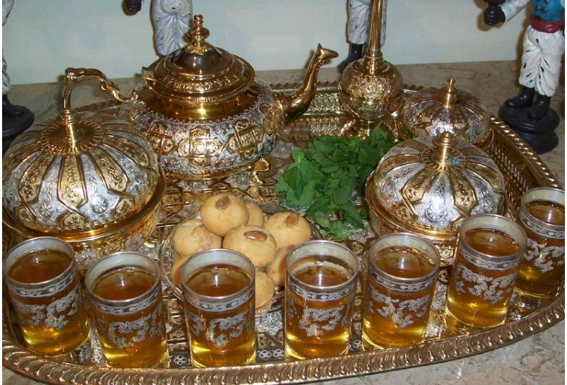

Atay (Thé à la Menthe) National
Boisson chaudeSymbole absolu de l'hospitalité marocaine, le thé à la menthe est bien plus qu'une simple infusion. C'est un rituel social, une cérémonie, un art de vivre.
Servi aux invités en signe de bienvenue
| Élément | Importance | Variante |
|---|---|---|
| Thé vert Gunpowder | Base essentielle | Thé vert chinois |
| Menthe fraîche (Nana) | Fraîcheur et parfum | Menthe pouliot |
| Sucre | Dosage selon la région | Miel (rare) |
| Eau | Qualité cruciale | Eau de source |
| Service | Hauteur et bulles | Théière en argent |
L'Art du Service :
Verser le thé de haut pour créer une mousse (la "couronne") et oxygéner la boisson. Le premier verre est le plus fort, le dernier le plus doux.